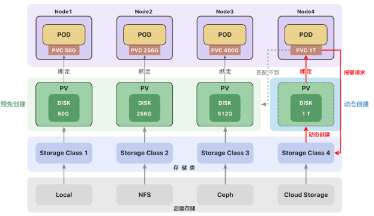

卷(Volume)
将数据存储在容器中，一旦容器被删除，数据也会被删除。 卷是独立于容器之外的一块存储区域，通过挂载(Mount)的方式供 Pod 中的容器使用。
- 使用场景 卷可以在多个容器之间共享数据。 卷可以将容器数据存储在外部存储或云存储上。 卷更容易备份或迁移。
常见的卷类型
- 临时卷(Ephemeral Volume)： emptyDir - 作为缓存或存储日志 configMap 、secret、 downwardAPI - 给 Pod 注入数据
- 持久卷(Persistent Volume)： 本地存储 - hostPath、 local 网络存储 - NFS 分布式存储 - Ceph(cephfs 文件存储、rbd 块存储)
- 投射卷(Projected Volumes)：projected 卷可以将多个卷映射到同一个目录上
后端存储
一个集群中可以包含多种存储(如 local、NFS、Ceph 或云存储)。 每种存储都对应一个存储类（StorageClass） ，存储类用来创建和管理持久卷，是集群与存储服务之间的桥梁。 管理员创建持久卷(PV)时，通过设置不同的 StorageClass 来创建不同类型的持久卷。

参考文档：
https://kubernetes.io/zh-cn/docs/concepts/storage/volumes/
https://kubernetes.io/zh-cn/docs/concepts/storage/ephemeral-volumes/
https://kubernetes.io/zh-cn/docs/tasks/configure-pod-container/configure-volume-storage/